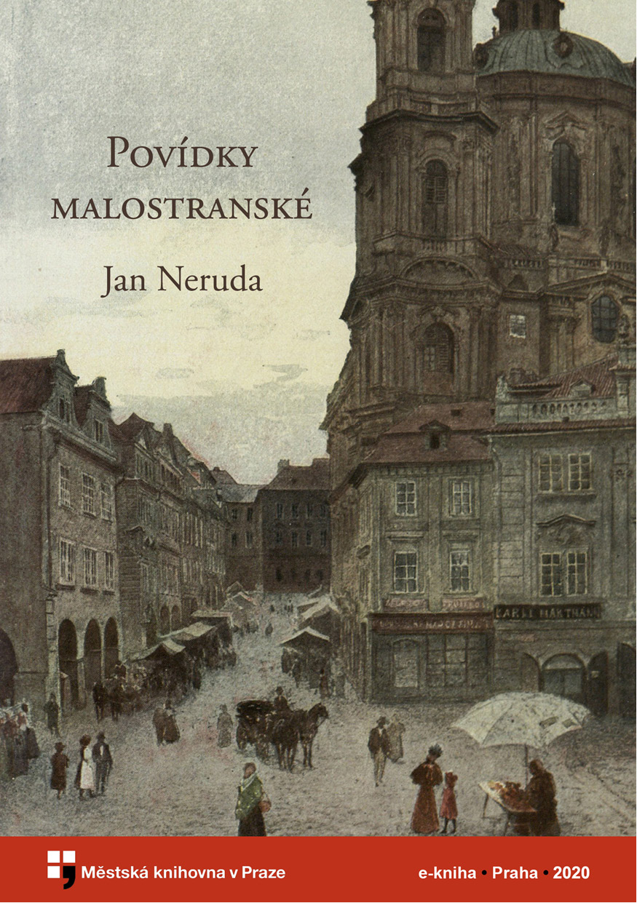

Týden v tichém domě
I. V košili
II. Dům se z větší části probudil
III. V rodině pana domácího
IV. Monolog lyrický
V. Starý mládenec – všeho štěstí vejlupek
VI. Rukopis a mračno
VII. Kousky zápisků praktikantových
VIII. Při pohřbu
IX. Další doklad pořekadla
X. V době rozechvění
XI. Prvotina novelistická, která prosí za laskavé shovění
XII. Pět minut po koncertu
XIII. Po tahu
XIV. Z něžné domácnosti
XV. Konec téhodne
Pan Ryšánek a pan Schlegl
I
II
Přivedla žebráka na mizinu
O měkkém srdci paní Rusky
Večerní šplechty
Doktor Kazisvět
Hastrman
Jak si nakouřil pan Vorel pěnovku
U Tří lilií
Svatováclavská mše
Jak to přišlo,že dne 20. srpna roku 1849, o půl jedné s poledne,Rakousko nebylo rozbořeno
Psáno o letošních Dušičkách
Figurky
Titulní strana
← Předchozí kapitola

Titulní strana
Následující kapitola →